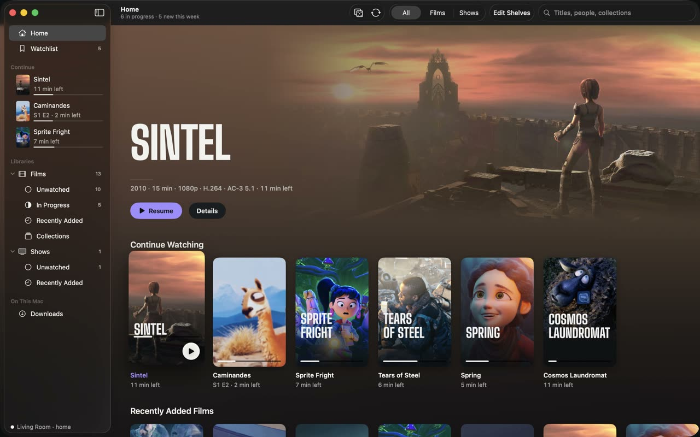
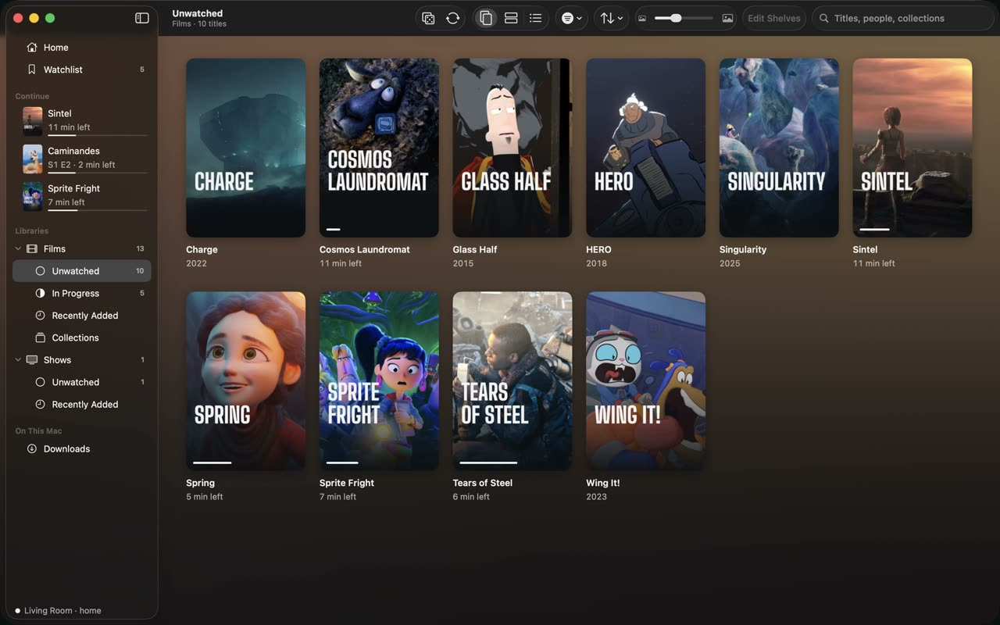
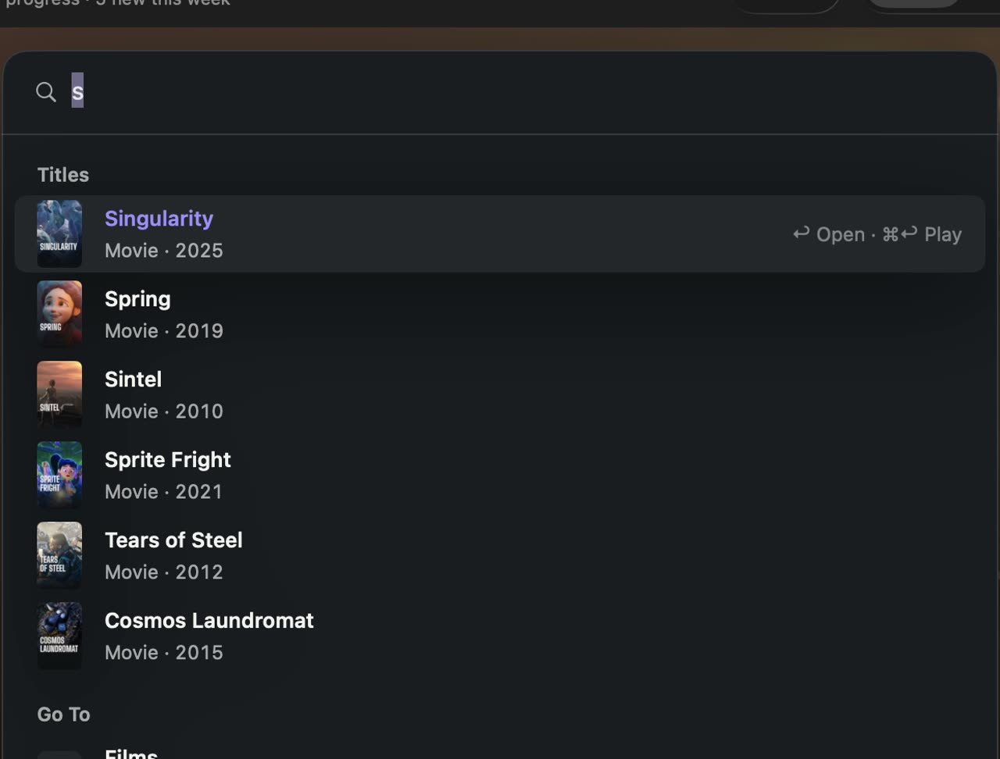
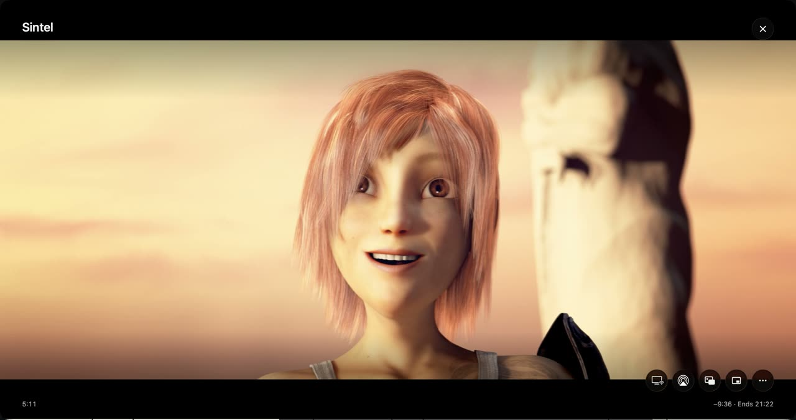
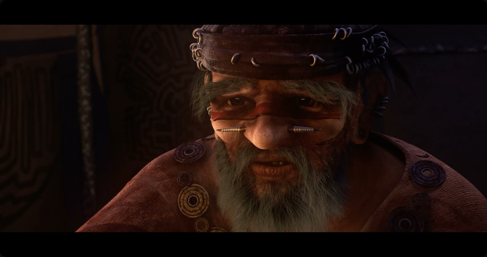
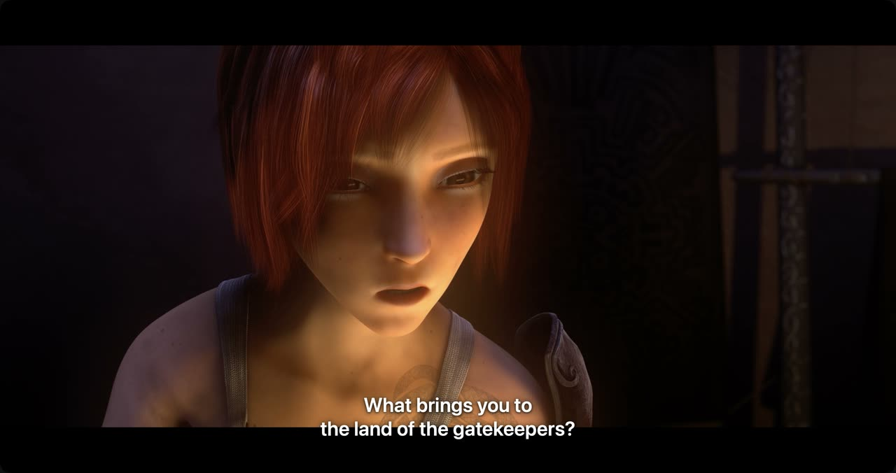
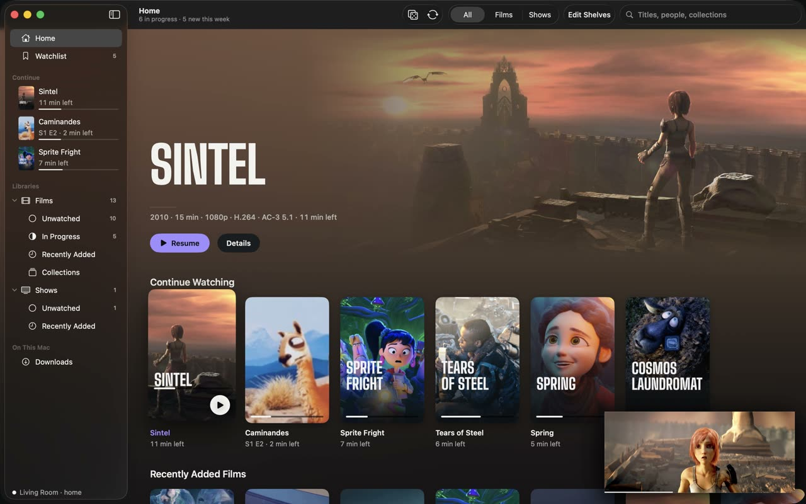
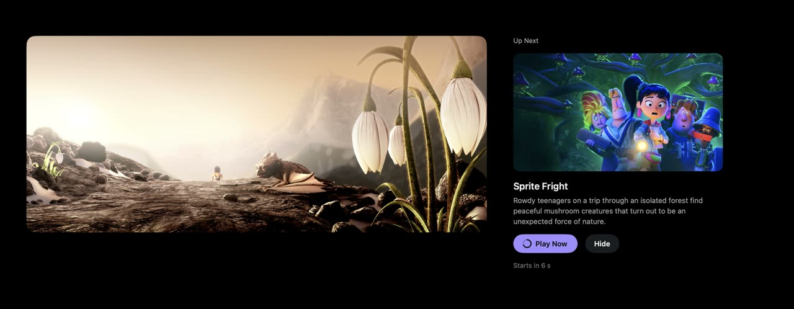
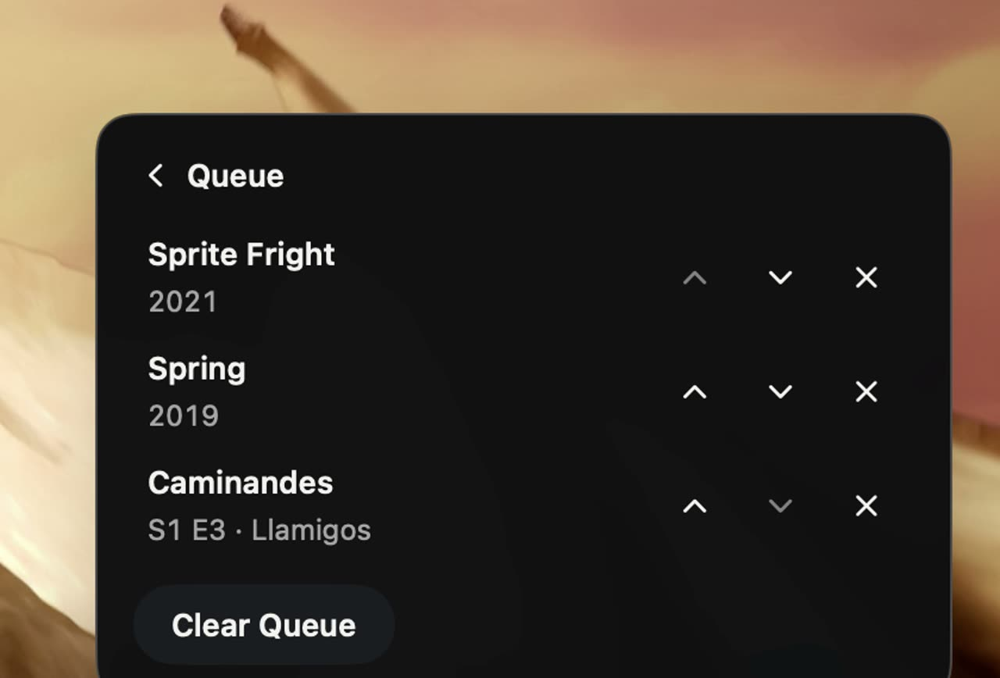
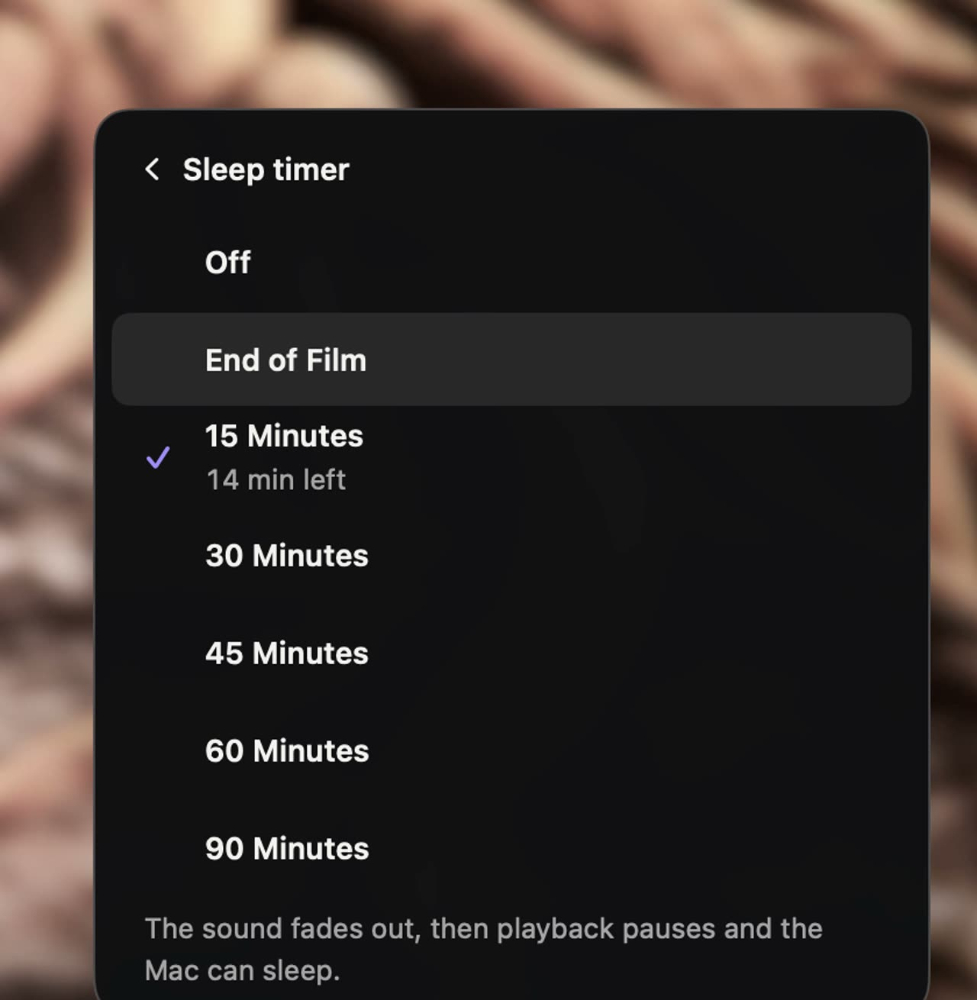

An evening with your Plex library.
Mezzanine is a Mac app for Plex. It plays your original files on the Mac itself, gets out of the way of a binge, and has a key for everything.
Download for Mac Source on GitHub
{{version}} · {{size}} · macOS 26 · Apple silicon · free and open source

Find something
The sidebar keeps your place: what you’re watching, with minutes left, then each library’s unwatched, in progress and recently added titles with counts. Home is yours to arrange from Plex’s rows, collections, playlists, your watchlist and smart shelves with rules of their own.
⌘K opens anything by name. It answers at once, because the whole library is indexed on the Mac. Can’t decide? ⇧⌘R opens something you haven’t seen.


Press play
The original file comes straight from your server and is decoded on the Mac: H.264, HEVC, AV1 and the older formats, HDR10 and Dolby Vision, stereo to Atmos. If a file won’t open, Plex repackages it, and only then converts it.
The sound fits what’s plugged in. The Mac’s speakers, headphones, AirPods, 2.1 speakers and a receiver each have a profile, with dialogue lift, night mode and a volume that goes to 400 % without clipping.

What did they say?
Press W. Mezzanine goes back ten seconds with subtitles on, then turns them off again.


No subtitles in the file? Search Plex and several free sources at once, or have the Mac listen: it can write subtitles from the dialogue, translate them, and match a file’s timing to the speech. The listening and translating stay on the Mac.
Look something up, keep watching
⌥M puts the film in the corner while you browse. Picture in Picture takes it to any app. AirPlay or Google Cast takes it to the TV, with the Mac as the remote.

Skip the credits, stay on the sofa
S skips intros and credits, or a rule per show does it for you. Up Next counts down with the next one already warmed up, and asks if you’re still there.


Line up the rest of the night with Play Next and Add to Queue, or shuffle a show, a collection or a whole playlist. Q shows what’s coming.
Stop after this one
⌥S sets a sleep timer for 15 to 90 minutes, or the end of the episode or film. The sound fades out, playback pauses and the Mac can sleep. Your place is kept on your server, so any Plex app picks it up.

Everything else
- Watching
- Chapters, scrub previews, Go to Time, frame steps, speed from 0.5× to 2×, full-size snapshots. Fit, Fill or Zoom, remembered per title. Media keys, Control Center and AirPods.
- Subtitles
- Text and picture subtitles (SRT, ASS, PGS, VobSub) at the right size and place, with your size, background and timing. Sidecar files.
- Library
- Posters, wide, list, folders or shelves, remembered per library. Collection pages, pins, filters, recent searches. Pick artwork, or hide the badges your server draws on posters.
- Watchlist
- Your Plex watchlist in the sidebar and as a shelf, including titles that aren’t on your server.
- Profiles
- Plex Home profiles with PINs, each with its own shelves, pins and queue. More than one server.
- Downloads
- Offline copies with subtitles and artwork, and “keep the next few episodes” per show. Progress syncs back when you’re online.
- The Mac
- Spotlight finds your films and shows. Shortcuts and Siri can resume, open or surprise you. New-episode notifications.
- For everyone
- VoiceOver, Full Keyboard Access, Reduce Motion, Increase Contrast and Text Size.
- Looking after itself
- Updates install quietly, never in the middle of a film. A diagnostics report you can save has no names, titles, addresses or tokens, and is never sent.
A key for everything
Every player key can be changed, and every action is in a menu too. ⌘/ lists them all.
| Space | Play, pause |
|---|---|
| ← → | Ten seconds |
| S | Skip intro or credits |
| N | Next episode |
| W | What did they say? |
| T | Go to a time |
| Q | Queue |
| D | Dialogue lift |
| ⌥S | Sleep timer |
| ⌥M | Mini player |
| ⌘K | Quick Open |
|---|---|
| ⌘F | Search |
| ⌘↩ | Play the focused title |
| W | Watched or unwatched |
| ⇧W | Watchlist |
| ⇧⌘R | Surprise Me |
| ⌘E | Arrange Home |
Install
- Download Mezzanine {{version}} ({{size}}), open the disk image and drag Mezzanine into Applications.
- Open it. macOS refuses the first time, because Mezzanine is signed but not notarized by Apple.
- In System Settings, go to Privacy & Security, scroll to Security and click Open Anyway. You do this once; updates install without it.
- Sign in to Plex and pick your server.
You need a Mac with Apple silicon, macOS 26, and a Plex Media Server you can sign in to.
Questions
- What does it cost?
- Nothing. It’s open source under the MIT license.
- Do I need Plex Pass?
- Not for Mezzanine. Intro and credits markers are made by the server, and that does need Plex Pass.
- Will it work with a friend’s server?
- Yes. Any server your Plex account can see, at home or away.
- What does it send?
- There are no analytics and no account of its own. It talks to plex.tv, your servers, the subtitle sites you turn on, and GitHub for updates. Your Plex token stays in the Keychain. Playback is reported to your server the way every Plex app does it.
- Intel Macs, iPhone, Apple TV?
- No. It’s a Mac app; AirPlay and Google Cast reach the TV.
- Something’s wrong
- Open an issue. Help ▸ Save Diagnostics Report… writes a file you can read before you attach it.